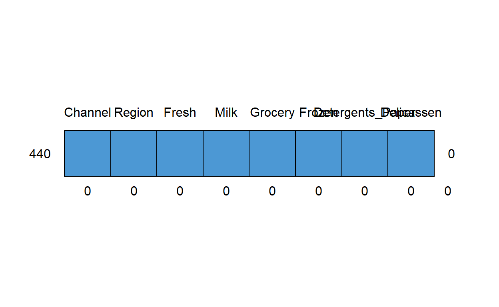
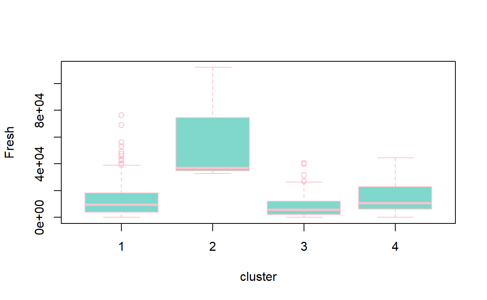
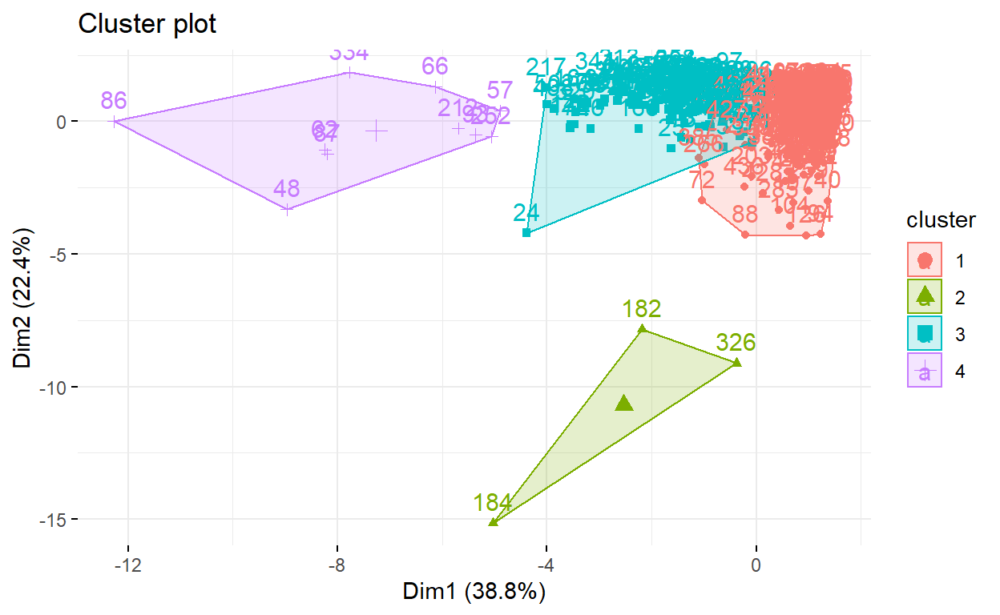
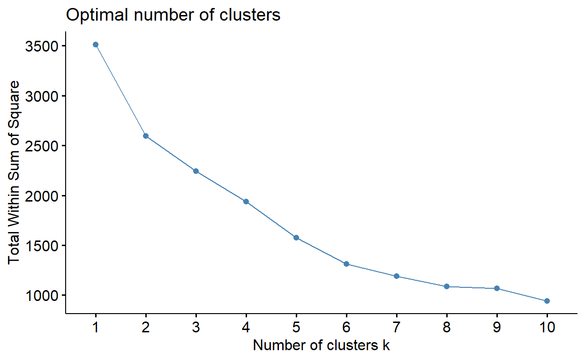
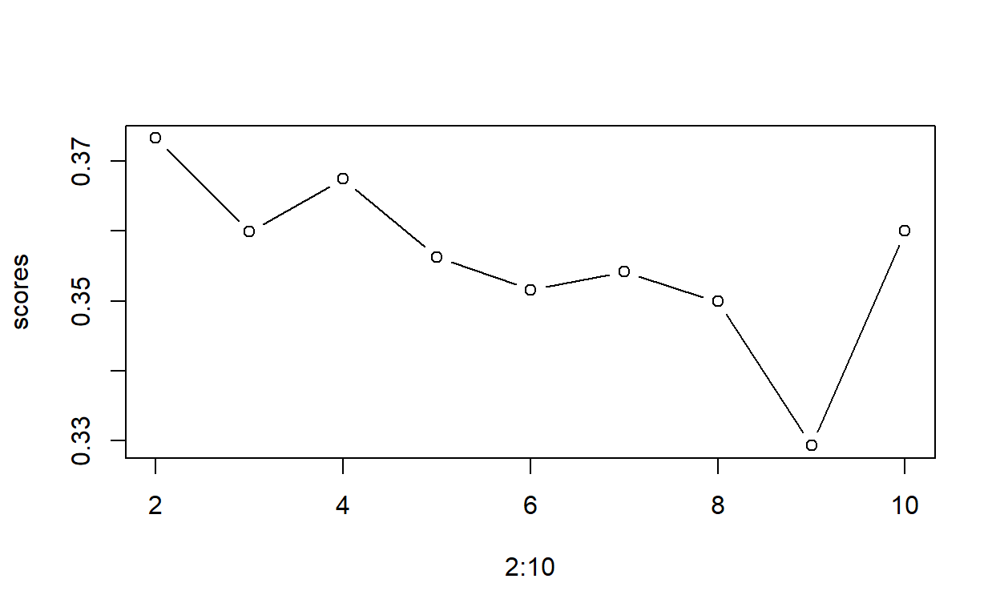
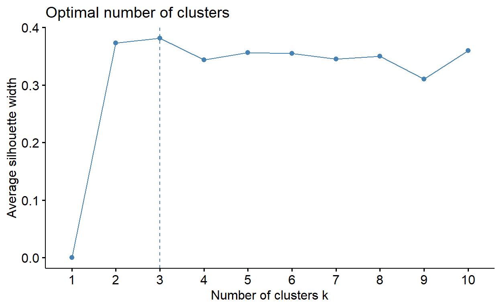
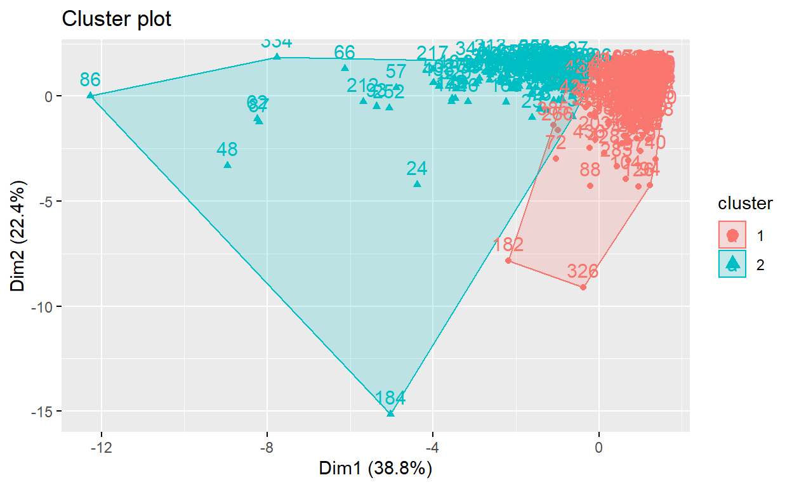
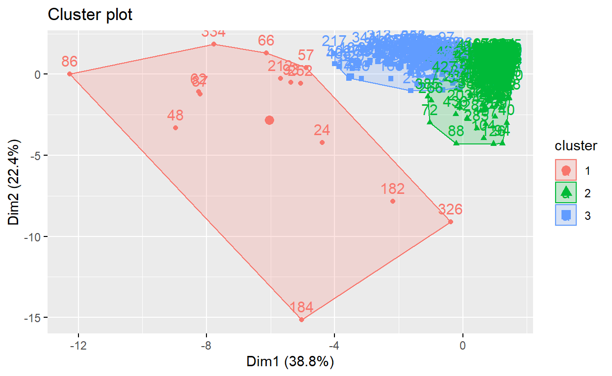

We will create the best clustering using the k-means method.
# importing data
wholesale <- read_excel("C:/Users/irem/Desktop/wholesale.xlsx")
First, let’s get to know the variables:
FRESH: Annual expenditure on fresh produce
MILK: Annual milk expenditure
GROCERY: Grocery products annual expenditure
FROZEN: Frozen products annual expenditure
DETERGENTS_PAPER: Detergent and paper annual expenditure
DELICATESSEN: Delicatessen annual expenditure
CHANNEL: (Hotel/Restoran/Cafe) or Retail channel (Nominal)
REGION: Customer area Lisnon, Oporto or other (Nominal)
I scale units to get rid of outliers.
scaleModel <- preProcess(wholesale, method = c("center","scale"))
modelData <- predict(scaleModel, wholesale)
I’m checking to see if there are any missing observations.
md.pattern(modelData) #missing value does not exist.
/\ /\
{ `---' }
{ O O }
==> V <== No need for mice. This data set is completely observed.
\ \|/ /
`-----'
Channel Region Fresh Milk Grocery Frozen Detergents_Paper
440 1 1 1 1 1 1 1
0 0 0 0 0 0 0
Delicassen
440 1 0
0 0#Creating model
clusterModel <- kmeans(modelData, centers = 4,
iter.max = 15, nstart = 15)
clusterModel
K-means clustering with 4 clusters of sizes 296, 3, 131, 10
Cluster means:
Channel Region Fresh Milk Grocery
1 -0.6822942 -0.04704424 0.07979916 -0.3554503 -0.4344436
2 -0.6895122 0.15948501 3.84044484 3.2957757 0.9852919
3 1.4470045 0.10690343 -0.29218794 0.4286373 0.6330682
4 1.4470045 -0.05577083 0.31347349 3.9174467 4.2707490
Frozen Detergents_Paper Delicassen
1 0.073138067 -0.4417690 -0.10544775
2 7.204892918 -0.1527927 6.79967230
3 -0.329983553 0.6495639 0.04416479
4 -0.003570131 4.6129149 0.50279301
Clustering vector:
[1] 3 3 3 1 3 3 3 3 1 3 3 3 3 3 3 1 3 1 3 1 3 1 1 3 3 3 1 1 3 1 1 1
[33] 1 1 1 3 1 3 3 1 1 1 3 3 3 3 3 4 3 3 1 1 3 3 1 1 4 3 1 1 3 4 3 3
[65] 1 4 1 3 1 1 1 1 1 3 3 1 1 3 1 1 1 3 3 1 3 4 4 1 1 1 1 1 4 1 3 1
[97] 3 1 1 1 3 3 3 1 1 1 3 3 3 3 1 3 1 1 1 1 1 1 1 1 1 1 1 3 1 1 1 3
[129] 1 1 1 1 1 1 1 1 1 1 1 1 1 1 1 1 1 3 1 1 1 1 1 1 1 1 1 3 3 1 3 3
[161] 3 1 1 3 3 3 3 1 1 1 3 3 1 3 1 3 1 1 1 1 1 2 1 2 1 1 1 1 3 3 1 1
[193] 1 3 1 1 1 3 1 1 3 3 1 1 1 3 1 3 1 3 1 4 1 1 3 1 3 1 3 1 1 1 1 3
[225] 1 1 3 1 1 1 3 1 1 1 1 1 1 1 1 1 1 1 1 1 1 3 1 1 1 1 1 4 1 1 1 1
[257] 1 1 1 1 1 1 1 1 3 1 3 1 3 1 1 1 1 1 1 1 1 1 1 3 1 3 1 1 1 1 1 1
[289] 1 1 1 1 1 3 1 3 1 3 3 1 3 3 3 3 3 3 3 1 1 3 1 1 3 1 1 3 1 1 1 3
[321] 1 1 1 1 1 2 1 1 1 1 1 3 1 4 1 3 1 1 1 1 3 3 1 3 1 1 3 3 1 3 1 3
[353] 1 3 1 1 1 3 1 1 1 1 1 1 1 3 1 1 1 1 3 1 1 3 1 1 3 1 1 3 1 1 1 1
[385] 1 1 1 1 1 1 1 1 1 1 1 1 3 1 1 1 1 1 1 1 1 1 1 3 3 1 1 1 1 1 1 3
[417] 3 1 3 1 1 3 1 3 3 1 1 1 1 1 1 1 1 1 1 1 1 3 1 1
Within cluster sum of squares by cluster:
[1] 1020.2318 215.6517 437.3645 160.2905
(between_SS / total_SS = 47.8 %)
Available components:
[1] "cluster" "centers" "totss" "withinss"
[5] "tot.withinss" "betweenss" "size" "iter"
[9] "ifault" fittedCluster <- fitted(clusterModel)
clusterModel$cluster
[1] 3 3 3 1 3 3 3 3 1 3 3 3 3 3 3 1 3 1 3 1 3 1 1 3 3 3 1 1 3 1 1 1
[33] 1 1 1 3 1 3 3 1 1 1 3 3 3 3 3 4 3 3 1 1 3 3 1 1 4 3 1 1 3 4 3 3
[65] 1 4 1 3 1 1 1 1 1 3 3 1 1 3 1 1 1 3 3 1 3 4 4 1 1 1 1 1 4 1 3 1
[97] 3 1 1 1 3 3 3 1 1 1 3 3 3 3 1 3 1 1 1 1 1 1 1 1 1 1 1 3 1 1 1 3
[129] 1 1 1 1 1 1 1 1 1 1 1 1 1 1 1 1 1 3 1 1 1 1 1 1 1 1 1 3 3 1 3 3
[161] 3 1 1 3 3 3 3 1 1 1 3 3 1 3 1 3 1 1 1 1 1 2 1 2 1 1 1 1 3 3 1 1
[193] 1 3 1 1 1 3 1 1 3 3 1 1 1 3 1 3 1 3 1 4 1 1 3 1 3 1 3 1 1 1 1 3
[225] 1 1 3 1 1 1 3 1 1 1 1 1 1 1 1 1 1 1 1 1 1 3 1 1 1 1 1 4 1 1 1 1
[257] 1 1 1 1 1 1 1 1 3 1 3 1 3 1 1 1 1 1 1 1 1 1 1 3 1 3 1 1 1 1 1 1
[289] 1 1 1 1 1 3 1 3 1 3 3 1 3 3 3 3 3 3 3 1 1 3 1 1 3 1 1 3 1 1 1 3
[321] 1 1 1 1 1 2 1 1 1 1 1 3 1 4 1 3 1 1 1 1 3 3 1 3 1 1 3 3 1 3 1 3
[353] 1 3 1 1 1 3 1 1 1 1 1 1 1 3 1 1 1 1 3 1 1 3 1 1 3 1 1 3 1 1 1 1
[385] 1 1 1 1 1 1 1 1 1 1 1 1 3 1 1 1 1 1 1 1 1 1 1 3 3 1 1 1 1 1 1 3
[417] 3 1 3 1 1 3 1 3 3 1 1 1 1 1 1 1 1 1 1 1 1 3 1 1I’m doing a reverse scale here.
reversedData <- modelData %>% select(one_of(scaleModel$mean %>% names)) %>%
map2_df(scaleModel$std, function(sd, var){var*sd}) %>%
map2_df(scaleModel$mean, function(mu, var){var+mu})
scaleModel$mean
Channel Region Fresh Milk
1.322727 2.543182 12000.297727 5796.265909
Grocery Frozen Detergents_Paper Delicassen
7951.277273 3071.931818 2881.493182 1524.870455 reversedData$cluster <- clusterModel$cluster
reversedData %>% group_by(cluster) %>% summarise_all(mean)
# A tibble: 4 x 9
cluster Channel Region Fresh Milk Grocery Frozen Detergents_Paper
<int> <dbl> <dbl> <dbl> <dbl> <dbl> <dbl> <dbl>
1 1 1.00 2.51 13010. 3173. 3823. 3427. 775.
2 2 1 2.67 60572. 30120. 17315. 38049. 2153
3 3 2 2.63 8305. 8960. 13967. 1470. 5979.
4 4 2 2.5 15965. 34708. 48537. 3055. 24875.
# ... with 1 more variable: Delicassen <dbl>boxplot(Fresh ~ cluster, data = reversedData,
col="#80d7cc",border="pink")

The range in cluster 1 and the range in cluster 4 are almost the same. The median of the 3rd cluster and the 4th cluster is similar.
fviz_cluster(clusterModel, data = modelData,
ggtheme = theme_minimal()
)

clusterModel$withinss #cost function
[1] 1020.2318 215.6517 437.3645 160.2905clusterModel$tot.withinss
[1] 1833.538wss <- sapply(2:10, FUN = function(x){kmeans(modelData, centers = x,
nstart = 10, iter.max = 15)$tot.withinss})
plot(2:10, wss, type = "b")
fviz_nbclust(modelData, kmeans, method = "wss")

silhouette(clusterModel$cluster, dist(modelData))
cluster neighbor sil_width
[1,] 3 1 0.37355819
[2,] 3 1 0.42920620
[3,] 3 1 0.23506491
[4,] 1 3 0.45914352
[5,] 3 1 0.17530370
[6,] 3 1 0.31555646
[7,] 3 1 0.30676907
[8,] 3 1 0.38282887
[9,] 1 3 0.41154373
[10,] 3 1 0.50823261
[11,] 3 1 0.42750335
[12,] 3 1 0.13984907
[13,] 3 1 0.27744045
[14,] 3 1 0.38694142
[15,] 3 1 0.36442282
[16,] 1 3 0.46915071
[17,] 3 1 0.46288391
[18,] 1 3 0.33310271
[19,] 3 1 0.32248382
[20,] 1 3 0.36150808
[21,] 3 1 0.24156874
[22,] 1 3 0.49248284
[23,] 1 3 0.29687637
[24,] 3 4 0.12069406
[25,] 3 1 0.30097041
[26,] 3 1 0.31868219
[27,] 1 3 0.50662730
[28,] 1 3 0.47953941
[29,] 3 1 0.38716473
[30,] 1 3 0.29738327
[31,] 1 3 0.31004413
[32,] 1 3 0.44539988
[33,] 1 3 0.43473774
[34,] 1 3 0.36141265
[35,] 1 3 0.44200170
[36,] 3 1 0.41374814
[37,] 1 3 0.30346113
[38,] 3 1 0.45887854
[39,] 3 1 0.47304671
[40,] 1 3 0.23760603
[41,] 1 3 0.27984785
[42,] 1 3 0.38206340
[43,] 3 1 0.47398083
[44,] 3 1 0.46348721
[45,] 3 1 0.43018426
[46,] 3 1 0.38214253
[47,] 3 1 0.48087479
[48,] 4 3 0.38141847
[49,] 3 1 0.44822227
[50,] 3 4 0.33332161
[51,] 1 3 0.47219973
[52,] 1 3 0.38008365
[53,] 3 1 0.08958941
[54,] 3 1 0.46123988
[55,] 1 3 0.42858355
[56,] 1 3 0.42272643
[57,] 4 3 -0.10182080
[58,] 3 1 0.48629465
[59,] 1 3 0.48482054
[60,] 1 3 0.31874080
[61,] 3 1 0.34269869
[62,] 4 3 0.41550515
[63,] 3 1 0.34333119
[64,] 3 1 0.49659390
[65,] 1 3 0.47025066
[66,] 4 3 0.17164203
[67,] 1 3 0.31549916
[68,] 3 1 0.40087008
[69,] 1 3 0.34849739
[70,] 1 3 0.47845096
[71,] 1 3 0.39379264
[72,] 1 3 0.02676125
[73,] 1 3 0.37467800
[74,] 3 1 0.12862857
[75,] 3 1 0.36989976
[76,] 1 3 0.47992034
[77,] 1 3 0.37150145
[78,] 3 1 0.42843697
[79,] 1 3 0.50248514
[80,] 1 3 0.41912887
[81,] 1 3 0.47355546
[82,] 3 1 0.48247178
[83,] 3 1 0.43931840
[84,] 1 3 0.47195726
[85,] 3 1 0.28161978
[86,] 4 3 0.39089340
[87,] 4 3 0.25492925
[88,] 1 3 0.08954934
[89,] 1 3 0.39768825
[90,] 1 3 0.38708226
[91,] 1 3 0.50758707
[92,] 1 3 0.42921254
[93,] 4 3 0.02147292
[94,] 1 3 0.11956719
[95,] 3 1 0.45923962
[96,] 1 3 0.39607519
[97,] 3 1 0.32373037
[98,] 1 3 0.44041210
[99,] 1 3 0.44322499
[100,] 1 3 0.48246085
[101,] 3 1 0.44585231
[102,] 3 1 0.50273386
[103,] 3 1 0.40145904
[104,] 1 3 0.17004264
[105,] 1 3 0.47285853
[106,] 1 3 0.47492519
[107,] 3 1 0.46159765
[108,] 3 1 0.49645456
[109,] 3 1 0.36214506
[110,] 3 1 0.33799707
[111,] 1 3 0.50119125
[112,] 3 1 0.49384178
[113,] 1 3 0.40266365
[114,] 1 3 0.49598957
[115,] 1 3 0.49019488
[116,] 1 3 0.50597195
[117,] 1 3 0.48993422
[118,] 1 3 0.45952277
[119,] 1 3 0.46916745
[120,] 1 3 0.49935322
[121,] 1 3 0.48901930
[122,] 1 3 0.47524012
[123,] 1 3 0.50594792
[124,] 3 1 0.34928222
[125,] 1 3 0.36133157
[126,] 1 3 0.14334739
[127,] 1 3 0.43680761
[128,] 3 1 0.31611115
[129,] 1 3 0.31883136
[130,] 1 3 0.31507302
[131,] 1 3 0.46721527
[132,] 1 3 0.45158071
[133,] 1 3 0.47075941
[134,] 1 3 0.48617362
[135,] 1 3 0.48719072
[136,] 1 3 0.48621986
[137,] 1 3 0.31737489
[138,] 1 3 0.31815141
[139,] 1 3 0.39252367
[140,] 1 3 0.44420355
[141,] 1 3 0.40064496
[142,] 1 3 0.25040416
[143,] 1 3 0.29036292
[144,] 1 3 0.43869937
[145,] 1 3 0.44203643
[146,] 3 1 0.33668747
[147,] 1 3 0.49122514
[148,] 1 3 0.47864334
[149,] 1 3 0.49041734
[150,] 1 3 0.38304781
[151,] 1 3 0.48273994
[152,] 1 3 0.42773284
[153,] 1 3 0.47855459
[154,] 1 3 0.35893712
[155,] 1 3 0.43116762
[156,] 3 1 0.47326145
[157,] 3 1 0.45644839
[158,] 1 3 0.48504542
[159,] 3 1 0.42862056
[160,] 3 1 0.47950315
[161,] 3 1 0.41434722
[162,] 1 3 0.47694610
[163,] 1 3 0.49371048
[164,] 3 1 0.41658677
[165,] 3 1 0.39233591
[166,] 3 1 0.43955047
[167,] 3 1 0.40781484
[168,] 1 3 0.42490263
[169,] 1 3 0.49065356
[170,] 1 3 0.49470375
[171,] 3 1 0.48029363
[172,] 3 1 0.33401847
[173,] 1 3 0.32309458
[174,] 3 1 0.47668439
[175,] 1 3 0.43008664
[176,] 3 1 0.45803485
[177,] 1 3 0.24718967
[178,] 1 3 0.40098216
[179,] 1 3 0.41971621
[180,] 1 3 0.42986330
[181,] 1 3 0.33191953
[182,] 2 1 -0.28528892
[183,] 1 3 0.08729351
[184,] 2 3 0.15008921
[185,] 1 3 0.40861617
[186,] 1 3 0.45415628
[187,] 1 3 0.47099913
[188,] 1 3 0.24802548
[189,] 3 1 0.46540330
[190,] 3 1 0.44936267
[191,] 1 3 0.42257825
[192,] 1 3 0.48645058
[193,] 1 3 0.47536258
[194,] 3 1 0.42518881
[195,] 1 3 0.48199920
[196,] 1 3 0.40763001
[197,] 1 3 0.19696039
[198,] 3 1 0.24343766
[199,] 1 3 0.33669081
[200,] 1 3 0.34529822
[201,] 3 1 0.33402418
[202,] 3 1 0.32827953
[203,] 1 3 0.16534868
[204,] 1 3 0.31148831
[205,] 1 3 0.31826241
[206,] 3 1 0.34325373
[207,] 1 3 0.34897816
[208,] 3 1 0.18240688
[209,] 1 3 0.25943629
[210,] 3 1 0.33501539
[211,] 1 3 0.35158878
[212,] 4 3 0.15269972
[213,] 1 3 0.34698152
[214,] 1 3 0.21927604
[215,] 3 1 0.26738101
[216,] 1 3 0.04176371
[217,] 3 4 0.25115801
[218,] 1 3 0.36311709
[219,] 3 1 0.23345203
[220,] 1 3 0.35018521
[221,] 1 3 0.36676086
[222,] 1 3 0.16820371
[223,] 1 3 0.33490570
[224,] 3 1 0.05608619
[225,] 1 3 0.35181231
[226,] 1 3 0.33361678
[227,] 3 1 0.14311093
[228,] 1 3 0.34603227
[229,] 1 3 0.26894367
[230,] 1 3 0.34260346
[231,] 3 1 0.05508568
[232,] 1 3 0.23551341
[233,] 1 3 0.32202494
[234,] 1 3 0.29840220
[235,] 1 3 0.34266211
[236,] 1 3 0.28836771
[237,] 1 3 0.35551388
[238,] 1 3 0.35899210
[239,] 1 3 0.35567233
[240,] 1 3 0.24184457
[241,] 1 3 0.27515792
[242,] 1 3 0.34002688
[243,] 1 3 0.36047111
[244,] 1 3 0.29985147
[245,] 1 3 0.18897605
[246,] 3 1 0.30325475
[247,] 1 3 0.35515569
[248,] 1 3 0.37100729
[249,] 1 3 0.32873256
[250,] 1 3 0.33807492
[251,] 1 3 0.33992660
[252,] 4 3 -0.02490560
[253,] 1 3 0.32540169
[254,] 1 3 0.17201201
[255,] 1 3 0.15502567
[256,] 1 3 0.32557325
[257,] 1 3 0.31505877
[258,] 1 3 0.31618367
[259,] 1 3 0.20573178
[260,] 1 3 0.19858004
[261,] 1 3 0.32480945
[262,] 1 3 0.35387762
[263,] 1 3 0.34113578
[264,] 1 3 0.28379501
[265,] 3 1 0.30995183
[266,] 1 3 0.05634869
[267,] 3 1 0.30534220
[268,] 1 3 0.32486555
[269,] 3 1 0.30401755
[270,] 1 3 0.36759146
[271,] 1 3 0.35042011
[272,] 1 3 0.31292883
[273,] 1 3 0.24451429
[274,] 1 3 0.35699129
[275,] 1 3 0.44023157
[276,] 1 3 0.44731244
[277,] 1 3 0.37217089
[278,] 1 3 0.28375269
[279,] 1 3 0.47970342
[280,] 3 1 0.37070234
[281,] 1 3 0.46340626
[282,] 3 1 0.33195287
[283,] 1 3 0.26158848
[284,] 1 3 0.37382786
[285,] 1 3 0.14926568
[286,] 1 3 0.31783015
[287,] 1 3 0.48056051
[288,] 1 3 0.43837402
[289,] 1 3 0.47872790
[290,] 1 3 0.31685902
[291,] 1 3 0.44027919
[292,] 1 3 0.48454673
[293,] 1 3 0.44839086
[294,] 3 1 0.43151571
[295,] 1 3 0.39926672
[296,] 3 1 0.18459551
[297,] 1 3 0.45351092
[298,] 3 1 0.26672514
[299,] 3 1 0.34973423
[300,] 1 3 0.40504691
[301,] 3 1 0.24952735
[302,] 3 1 0.44791954
[303,] 3 1 0.37609132
[304,] 3 1 0.38798736
[305,] 3 1 0.41746796
[306,] 3 1 0.35473358
[307,] 3 1 0.45509056
[308,] 1 3 0.45019105
[309,] 1 3 0.44087176
[310,] 3 1 0.38387608
[311,] 1 3 0.34819467
[312,] 1 3 0.36231478
[313,] 3 1 0.33987396
[314,] 1 3 0.46857455
[315,] 1 3 0.41719492
[316,] 3 1 0.37223257
[317,] 1 3 0.46567554
[318,] 1 3 0.37593054
[319,] 1 3 0.45261073
[320,] 3 1 0.36073020
[321,] 1 3 0.40699767
[322,] 1 3 0.45399578
[323,] 1 3 0.45291391
[324,] 1 3 0.35010494
[325,] 1 3 0.41699408
[326,] 2 1 -0.10719072
[327,] 1 3 0.45393530
[328,] 1 3 0.41186050
[329,] 1 3 0.42793573
[330,] 1 3 0.43675500
[331,] 1 3 0.45803029
[332,] 3 1 0.42418446
[333,] 1 3 0.42285518
[334,] 4 3 0.23113100
[335,] 1 3 0.02381463
[336,] 3 1 0.25390623
[337,] 1 3 0.45862834
[338,] 1 3 0.42658799
[339,] 1 3 0.26491718
[340,] 1 3 0.35987323
[341,] 3 1 0.42039587
[342,] 3 1 0.44941579
[343,] 1 3 0.26250322
[344,] 3 1 0.38812809
[345,] 1 3 0.47708626
[346,] 1 3 0.29995958
[347,] 3 1 0.48360358
[348,] 3 1 0.30395956
[349,] 1 3 0.46211930
[350,] 3 1 0.45343196
[351,] 1 3 0.47981236
[352,] 3 1 0.44251389
[353,] 1 3 0.44424632
[354,] 3 1 0.46951044
[355,] 1 3 0.39691871
[356,] 1 3 0.42908542
[357,] 1 3 0.46706597
[358,] 3 1 0.38997030
[359,] 1 3 0.16374206
[360,] 1 3 0.40151451
[361,] 1 3 0.47427999
[362,] 1 3 0.48215429
[363,] 1 3 0.45370753
[364,] 1 3 0.43597284
[365,] 1 3 0.46448225
[366,] 3 1 0.39443789
[367,] 1 3 0.49668354
[368,] 1 3 0.47576168
[369,] 1 3 0.46179696
[370,] 1 3 0.48643111
[371,] 3 1 0.04959055
[372,] 1 3 0.43186364
[373,] 1 3 0.33771000
[374,] 3 1 0.29743331
[375,] 1 3 0.49271607
[376,] 1 3 0.47283265
[377,] 3 1 0.40934267
[378,] 1 3 0.32817315
[379,] 1 3 0.45024435
[380,] 3 1 0.30550501
[381,] 1 3 0.42085188
[382,] 1 3 0.39855879
[383,] 1 3 0.26474702
[384,] 1 3 0.45417802
[385,] 1 3 0.02685022
[386,] 1 3 0.51014398
[387,] 1 3 0.44606705
[388,] 1 3 0.47131037
[389,] 1 3 0.50392199
[390,] 1 3 0.50993138
[391,] 1 3 0.46105024
[392,] 1 3 0.44672237
[393,] 1 3 0.41859897
[394,] 1 3 0.37568104
[395,] 1 3 0.49539363
[396,] 1 3 0.50165925
[397,] 3 1 0.41186807
[398,] 1 3 0.47246180
[399,] 1 3 0.49078885
[400,] 1 3 0.50024330
[401,] 1 3 0.48770085
[402,] 1 3 0.32728814
[403,] 1 3 0.37941534
[404,] 1 3 0.29826480
[405,] 1 3 0.45830981
[406,] 1 3 0.49681944
[407,] 1 3 0.35589657
[408,] 3 1 0.48810598
[409,] 3 1 0.30050860
[410,] 1 3 0.30030960
[411,] 1 3 0.43914490
[412,] 1 3 0.35098296
[413,] 1 3 0.23906312
[414,] 1 3 0.22090343
[415,] 1 3 0.45393505
[416,] 3 1 0.40075454
[417,] 3 1 0.48834329
[418,] 1 3 0.25842826
[419,] 3 1 0.48995046
[420,] 1 3 0.45220436
[421,] 1 3 0.09906878
[422,] 3 1 0.34567647
[423,] 1 3 0.40509502
[424,] 3 1 0.20862012
[425,] 3 1 0.32274230
[426,] 1 3 0.30417541
[427,] 1 3 0.13106038
[428,] 1 3 0.18633007
[429,] 1 3 0.41000999
[430,] 1 3 0.43997321
[431,] 1 3 0.22854768
[432,] 1 3 0.29402515
[433,] 1 3 0.42134485
[434,] 1 3 0.45315172
[435,] 1 3 0.37824588
[436,] 1 3 0.17185246
[437,] 1 3 0.34343919
[438,] 3 4 0.36682210
[439,] 1 3 0.47554004
[440,] 1 3 0.44101326
attr(,"Ordered")
[1] FALSE
attr(,"call")
silhouette.default(x = clusterModel$cluster, dist = dist(modelData))
attr(,"class")
[1] "silhouette"# The model with silhouette score max will be the best k model.
silScore <- function(x){
model <- kmeans(modelData, centers = x , nstart = 10, iter.max = 15)
sil <- silhouette(model$cluster, dist(modelData))[,3]
score <- mean(sil)
return(score)
}
scores <- sapply(2:10, FUN = silScore)
scores
[1] 0.3732334 0.3598428 0.3674071 0.3562636 0.3515995 0.3541891
[7] 0.3499041 0.3293357 0.3599715plot(2:10, scores, type = "b")

Max score is best so “2”
Let’s sort.
fviz_nbclust(modelData, kmeans, method = "silhouette")

According to the code above, the optimal 3 point came out because we gave nstart a random number.
clusterModelK2 <- kmeans(modelData, centers = 2, nstart = 50, iter.max = 20)
clusterModelK3 <- kmeans(modelData, centers = 3, nstart = 50, iter.max = 20)
fviz_cluster(clusterModelK2, modelData)

In the code above there are outliers in the blue region at the extremes, the density is at the top.
fviz_cluster(clusterModelK3, modelData)

In the above code, it created a cluster of outliers on the left.
reversedData$clusterK2 <- clusterModelK2$cluster
reversedData$clusterK3 <- clusterModelK3$cluster
reversedData %>% group_by(clusterK2) %>% summarise_all(mean)
# A tibble: 2 x 11
clusterK2 Channel Region Fresh Milk Grocery Frozen
<int> <dbl> <dbl> <dbl> <dbl> <dbl> <dbl>
1 1 1.03 2.50 13576. 3318. 3944. 3667.
2 2 1.99 2.63 8441. 11394. 17005. 1727.
# ... with 4 more variables: Detergents_Paper <dbl>,
# Delicassen <dbl>, cluster <dbl>, clusterK3 <dbl>More milk intake in cluster 2.
reversedData %>% group_by(clusterK3) %>% summarise_all(mean)
# A tibble: 3 x 11
clusterK3 Channel Region Fresh Milk Grocery Frozen
<int> <dbl> <dbl> <dbl> <dbl> <dbl> <dbl>
1 1 1.79 2.57 26267. 33848. 39952. 10703.
2 2 1.00 2.51 13010. 3173. 3823. 3427.
3 3 2 2.62 8166. 8749. 13905. 1442.
# ... with 4 more variables: Detergents_Paper <dbl>,
# Delicassen <dbl>, cluster <dbl>, clusterK2 <dbl>When we look at the region, we see that there is no distinction according to this. Meat intake is higher in cluster 3.
1 and 3 restaurants 2nd cluster hotel.
As a result, we can segment customers according to this cluster and organize campaigns accordingly. The optimum number of clusters is 2 and 3. Whichever is more meaningful for the company, that is, profitable, we can use that cluster as customer segmentation.